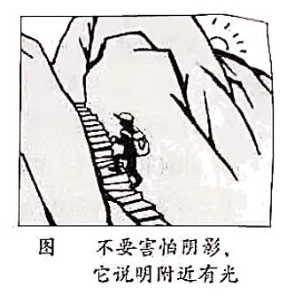

2021年北京市中考政治试题 · 选择题 第6、7、8、9、10题
6. 对下列说法解读正确的是（ ）
| 说法 | 解读 |
A | 难过的时候抱抱自己，允许自己脆弱一会儿 | 情绪的表达会影响人际交往 |
B | 友谊是两颗心真诚相待 | 正确对待交友中受到的伤害 |
C | 成功易使人陶醉，莫把百尺当尽头 | 努力是梦想与现实间的桥梁 |
D | 一滴水只有放进大海里才永远不会干涸 | 个人不能离开集体单独生存 |
A. AB. BC. CD. D
7. 某校学生以“全民守法，中学生在行动”为主题开展了模拟法庭、法治情景剧等活动，这些活动加深了学生对法律知识的理解。下列选项，中学生应该做的是（ ）
①努力为法治中国建设贡献力量 ②调解民间纠纷，维护公平正义
③升国旗时，面向国旗肃立致敬 ④法定职责必须为，法无授权不可为
A. ①②B. ①③C. ②④D. ③④
8. 为落实《中华人民共和国反食品浪费法》，防止食品浪费行为，营造厉行节约的社会风尚，北京市民提出许多建议。下列建议，应由政府行使职权的是（ ）
A. 对造成严重食品浪费的企业主管人员予以诫勉
B. 加强监管，及时依法处理严重浪费食品事件
C. 落实“光盘行动”，提醒劝导消费者过量点餐取餐的行为
D. 加强对《中华人民共和国反食品浪费法》实施情况的检查
9. “乘客朋友们，欢迎您乘坐‘红色专车’。我们现在所在的地方是北大红楼，这里曾是新文化运动的大本营、五四运动的发源地、最早系统宣传马克思主义的红色阵地……”近期，北京公交集团开通了“红色专车”，为市民打造“流动的红色课堂”。此举（ ）
A. 将文化与生活相融合，实现各民族的文化交流
B. 有助于人们追寻革命先辈足迹，传承革命精神
C. 有利于中华文化兼收并蓄，在交流互鉴中发展
D. 丰富中华民族精神的内涵，展现红色文化魅力
10. 对图理解正确的是（ ）

①不要害怕阴影，及时调整目标 ②换个角度思考，心中充满希望
③拒绝不良诱惑，努力向光而行 ④困难是暂时的，风雨后有彩虹
A. ①②B. ①③C. ②④D. ③④